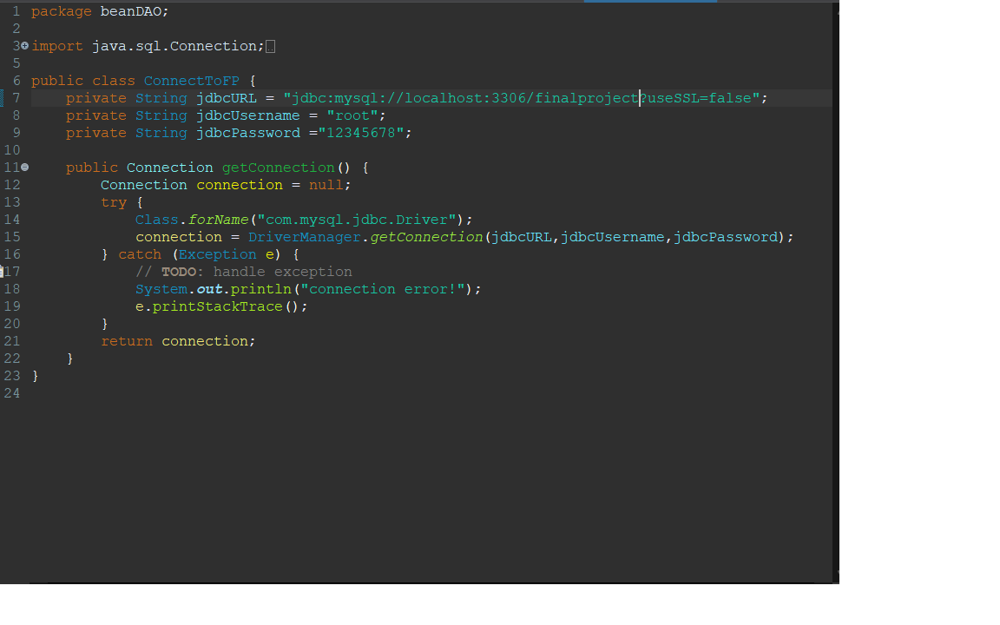

public class ConnectToFP {
private String jdbcURL = "jdbc:mysql://localhost:3306/finalproject?useSSL=false";
private String jdbcUsername = "root";
private String jdbcPassword ="12345678";
public Connection getConnection() {
Connection connection = null;
try {
Class.forName("com.mysql.jdbc.Driver");
connection = DriverManager.getConnection(jdbcURL,jdbcUsername,jdbcPassword);
} catch (Exception e) {
// TODO: handle exception
System.out.println("connection error!");
e.printStackTrace();
}
return connection;
}
}
該圖片中程式碼
第6行:class 名字取自己喜歡的 範例是要連線到finalproject這個database 所以用ConnectToFP
第7行:要修改的地方是finalproject 這裡要填上自己的database名字
第8行:登入的帳號 還是新手 用root就可以 不用修改
第9行:密碼 是這個MySQL的登入密碼 改成你自己設定的密碼
這樣就完成設定了 只要將connection連線呼叫這個class就可以了。
